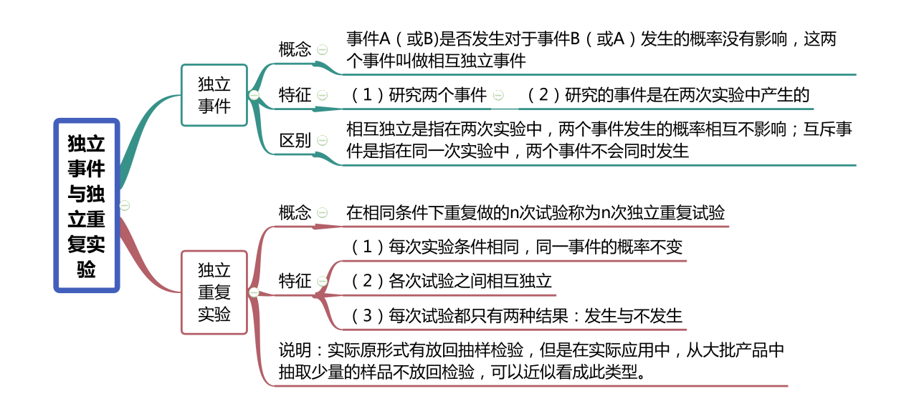

← 概率资料目录考点 37 · 独立事件与独立重复试验 · 讲解
资料来源：学科网一轮复习笔记 · 共 8 题
独立事件与独立重复试验思维导图
点击图片查看原图第 1 题
1．甲､乙､丙三人参加学业水平测试，已知他们通过测试的概率分别为，且每人是否通过测试相互独立，则这三人中至少有一人通过测试的概率为（
）
A．
B．

C．

D．
查看答案与解析
【答案】D
【解析】所求事件的对立事件为“三人均未通过测试”，概率为，故至少一人通过测试的概率为.故选：D
第 2 题
2．位于直角坐标原点的一个质点P按下列规则移动：质点每次移动一个单位，移动的方向向左或向右，并且向左移动的概率为 ，向右移动的概率为，则质点P移动五次后位于点
的概率是（
）
，向右移动的概率为，则质点P移动五次后位于点
的概率是（
）
查看答案与解析
【答案】D
【解析】由题意知，质点P移动五次后位于点，其中向左移动2次，向右移动3次；
其中向左平移的2次有
种情况，剩下的3次向右平移；则其概率为，故选:
D.
第 3 题
3．某项数学竞赛考试共四道题，考察内容分别为代数、几何、数论、组合，已知前两题每题满分40分，后两题每题满分60分，题目难度随题号依次递增，已知学生甲答题时，若该题会做则必得满分，若该题不会做则不作答得0分，通过对学生甲以往测试情况的统计，得到他在同类模拟考试中各题的得分率，如表所示：
|
代数
|
几何
|
数论
|
组合
|
第1题
|
0.6
|
0.8
|
0.7
|
0.7
|
第2题
|
0.5
|
0.7
|
0.7
|
0.6
|
第3题
|
0.4
|
0.5
|
0.5
|
0.3
|
第4题
|
0.2
|
0.3
|
0.3
|
0.2
|
假设学生甲每次考试各题的得分相互独立.
（1）若此项竞赛考试四道题的顺序依次为代数、几何、数论、组合，试预测学生甲考试得160分的概率；
（2）学生甲研究该项竞赛近五年的试题发现第1题都是代数题，于是他在赛前针对代数版块进行了强化训练，并取得了很大进步，现在，只要代数题是在试卷第1、2题的位置，他就一定能答对，若今年该项数学竞赛考试四道题的顺序依次为代数、数论、组合、几何，试求学生甲此次考试得分 的分布列.
的分布列.
查看答案与解析
【答案】（1）0.046；（2）答案见解析.
【解析】（1）学生甲得160分，即第1，2题做对一道，第3、4题都做对，
.
（2）由题知学生甲第1题必得40分，只需考虑另三道题的得分情况，
故
的所有可能取值为40，80，100，140，160，200，
，
，
，
，
，
.
 的分布列为：
的分布列为：
|
40
|
80
|
100
|
140
|
160
|
200
|

|
0.147
|
0.343
|
0.126
|
0.294
|
0.027
|
0.063
|
第 4 题
4．贝诺酯为对乙酰氨基酚与阿司匹林的酯化产物，是一种新型的抗炎、抗风湿、解热镇痛药，主要用于类风湿关节炎、急慢性风湿性关节炎、神经痛及术后疼痛．药监部门要利用小白鼠扭体实验，对某厂生产的该药品的镇痛效果进行检测，若用药后的小白鼠扭体次数没有减少，扭体时间间隔没有变长，则认定镇痛效果不明显．
（1）若该药品对雌性小白鼠镇痛效果明显的概率为，对雄性小白鼠镇痛效果明显的概率为 ，药监部门要利用两只雌性和两只雄性小白鼠检测该药药效，对4只小白鼠逐一检测．若在检测过程中，一只小白鼠用药后镇痛效果明显，记录积分为1，镇痛效果不明显，则记录积分为
，药监部门要利用两只雌性和两只雄性小白鼠检测该药药效，对4只小白鼠逐一检测．若在检测过程中，一只小白鼠用药后镇痛效果明显，记录积分为1，镇痛效果不明显，则记录积分为 ．用随机变量
表示检测4只小白鼠后的总积分，求随机变量
的分布列和数学期望
．用随机变量
表示检测4只小白鼠后的总积分，求随机变量
的分布列和数学期望 ；
；
（2）若该药品对每只雌性小白鼠镇痛效果明显的概率均为 ，现对6只雌性小白鼠逐一进行检测，当检测到镇痛效果不明显的小白鼠时，停止检测．设至少检测5只雌性小白鼠才能发现镇痛效果不明显的概率为
，现对6只雌性小白鼠逐一进行检测，当检测到镇痛效果不明显的小白鼠时，停止检测．设至少检测5只雌性小白鼠才能发现镇痛效果不明显的概率为 ，求
最大时
的值．
，求
最大时
的值．
查看答案与解析
【答案】（1）分布列答案见解析，期望为：；（2）
．
【解析】（1）由题意，随机变量
的可能取值为，，0，2，4．
，
，
，
，
．
的分布列为：
|
|
|
0
|
2
|
4
|
|
|
|
|
|
|
．
（2）由题意知，
，
．
令
得，
．
∴当
时，，
单调递增；
当
时， ，
单调递减，
，
单调递减，
∴当，
取得最大值．
第 5 题
1．某一批花生种子，如果每 粒发芽的概率为，那么播下
粒种子至多有
粒未发芽的概率是__________．（请用分数表示结果）
粒发芽的概率为，那么播下
粒种子至多有
粒未发芽的概率是__________．（请用分数表示结果）
查看答案与解析
【答案】
【解析】播下
粒种子至多有
粒未发芽包含：①
粒未发芽；②
粒都发芽.
因此，所求概率为.故答案为：.
第 6 题
2．下图是一块高尔顿板示意图：在一块木板上钉着若干排互相平行但相互错开的圆柱形小木块，小木块之间留有适当的空隙作为通道，小球从上方的通道口落下后，将与层层小木块碰撞，最后掉入下方的某一个球槽内.若小球下落过程中向左、向右落下的机会均等，则小球最终落入⑥号球槽的概率为（
）
A．
B．
C．
D．

查看答案与解析
【答案】A
【解析】设这个球落入⑥号球槽为事件 ，则落入⑥号球槽小球五次向右，所以.故选：A.
，则落入⑥号球槽小球五次向右，所以.故选：A.
第 7 题
3．某校高二年级模仿《中国诗词大会》节目举办学校诗词大会，进入正赛的条件为：先参加初赛，初赛时，电脑随机抽取10首不同的古诗，参赛者能够正确背诵6首及以上的参赛者进入正赛，若学生甲参赛，他背诵每一首古诗的正确的概率均为；
（1）求甲在初赛中恰好正确背诵8首的概率
（2）若进入正赛，则用积分淘汰制，规则是：参赛者初始分为零分，电脑随机抽取4首不同的古诗，每首古诗背诵正确加2分，错误减1分由于难度增加，甲背诵每首古诗正确的概率为 ，求甲在正赛中积分X的概率分布列及数学期望．
，求甲在正赛中积分X的概率分布列及数学期望．
查看答案与解析
【答案】（1）；（2）分布列详见解析，.
【解析】（1）记“甲在初赛中恰好正确背诵8首古诗”为事件
学生甲在初赛中背诵每一首古诗的正确的概率均为,
,
所以甲在初赛中恰好正确背诵8首古诗的概率为；
（2）甲的积分
的可能值为8分，5分，2分，-1分，-4分，
则，
，
，
所以
的分布列为
所以，
甲在正赛中积分X的数学期望为.
第 8 题
4．某人玩掷正方体骰子走跳棋的游戏，已知骰子每面朝上的概率都是 ，棋盘上标有第0站，第1站，第2站，……，第100站.一枚棋子开始在第0站，选手每掷一次骰子，棋子向前跳动一次，若掷出朝上的点数为1或2，棋子向前跳两站；若掷出其余点数，则棋子向前跳一站，直到跳到第99站或第100站时，游戏结束；设游戏过程中棋子出现在第
站的概率为
，棋盘上标有第0站，第1站，第2站，……，第100站.一枚棋子开始在第0站，选手每掷一次骰子，棋子向前跳动一次，若掷出朝上的点数为1或2，棋子向前跳两站；若掷出其余点数，则棋子向前跳一站，直到跳到第99站或第100站时，游戏结束；设游戏过程中棋子出现在第
站的概率为 .
.
（1）当游戏开始时，若抛掷均匀骰子3次后，求棋子所走站数之和X的分布列与数学期望；
（2）证明：；
（3）若最终棋子落在第99站，则记选手落败，若最终棋子落在第100站，则记选手获胜，请分析这个游戏是否公平.
查看答案与解析
【答案】（1）详见解析（2）证明见解析；（3）游戏不公平，详见解析
【解析】（1）随机变量X的所有可能取值为3，4，5，6，
，
，
所以，随机变量X的分布列为：
.
（2）由题意知，当
时，棋子要到第
站，有两种情况：
①由第n站跳1站得到，其概率为；
②由第
站跳2站得到，其概率为
，，
，
（3）由（2）知，当棋子落到第99站游戏结束的概率为，
当棋子落到第100站游戏结束的概率为，
， 最终棋子落在第99站的概率大于落在第100站的概率，
最终棋子落在第99站的概率大于落在第100站的概率，
游戏不公平.